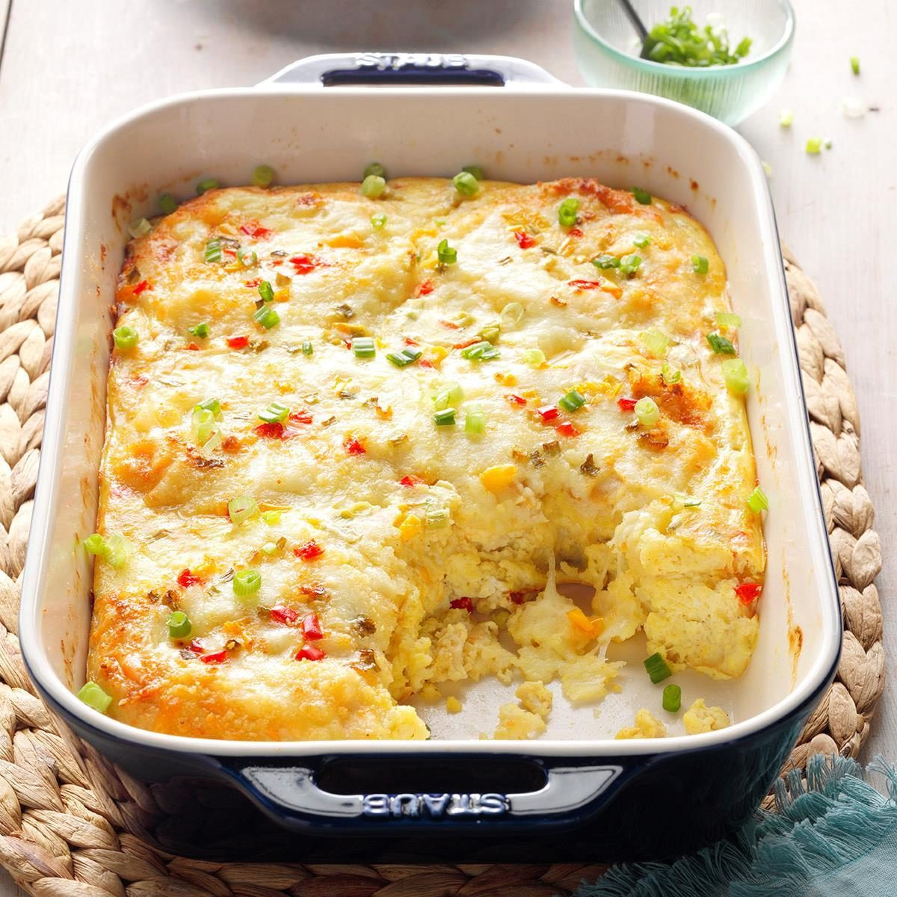

Crab Brunch Casserole

Description
A delicious casserole - elegant enough for a Sunday family brunch! Easy to make and just takes 1 hour and can feed upto 8 people.
Ingredients
- 2 eggs, beaten
- 2 cups milk
- 2 cups seasoned croutons
- 8 ounces shredded Cheddar cheese
- 1 tablespoon dried minced onion
- 1 tablespoon dried parsley
- 1 pound fresh crabmeat
- salt and pepper to taste
- ¼ cup grated Parmesan cheese
Steps
- Preheat oven to 325 degrees F (165 degrees C). Lightly grease a medium baking dish.
- In large bowl, mix the eggs, milk, croutons, cheese, onion, and parsley. Stir in the crab-meat. Season with salt and pepper. Spoon into the prepared baking dish, and sprinkle with Parmesan cheese.
- Bake 1 hour in the preheated oven, or until a knife inserted into center of the casserole comes out clean. Serve immediately.